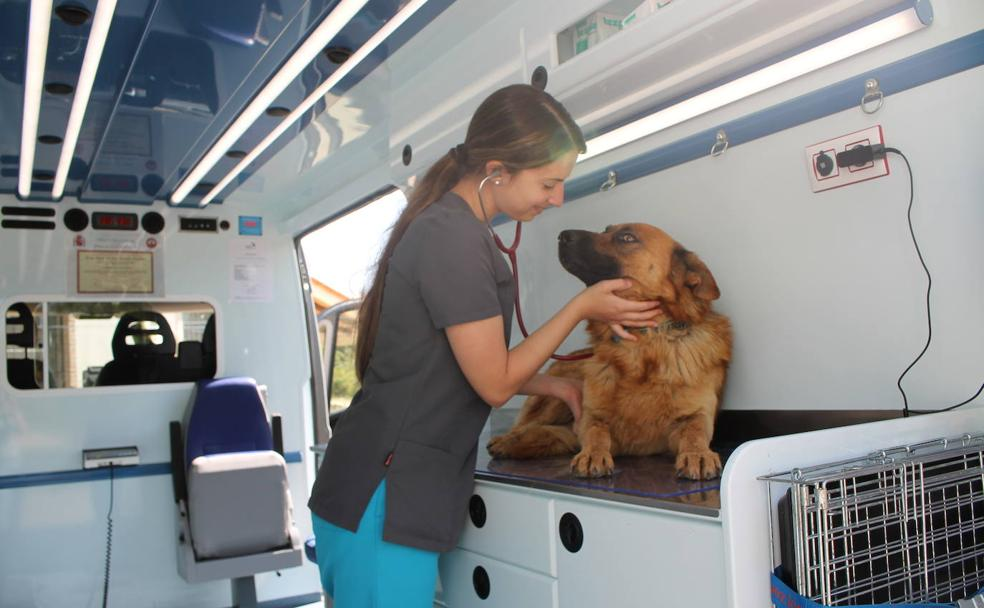
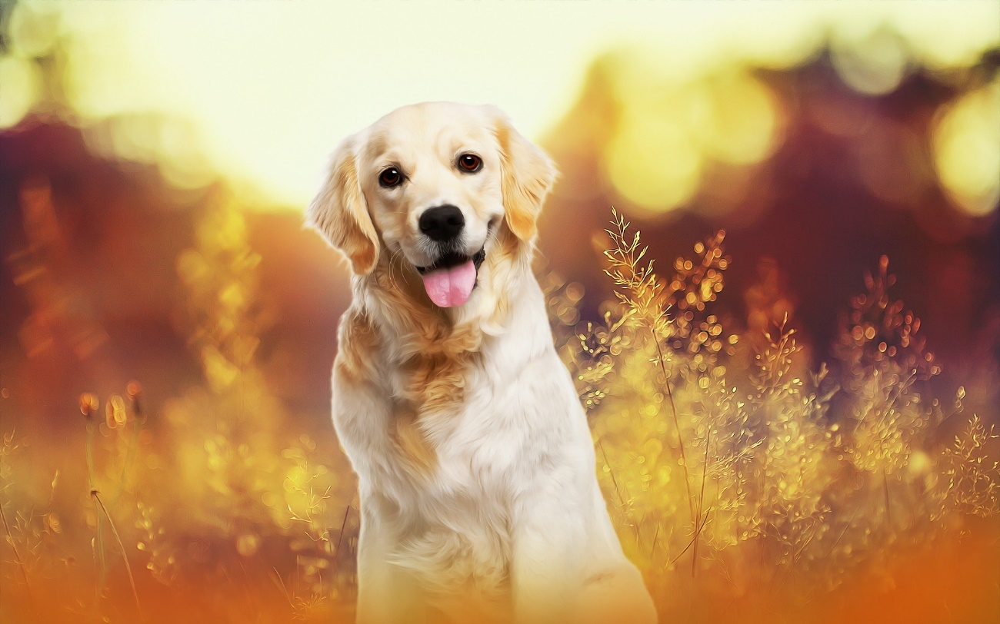
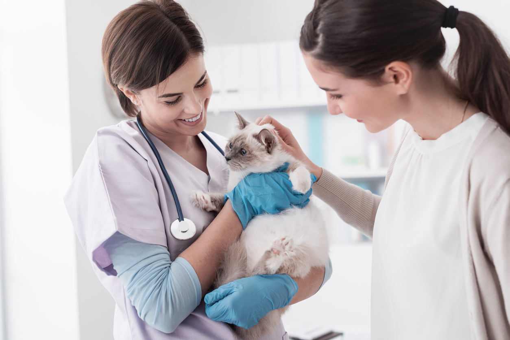
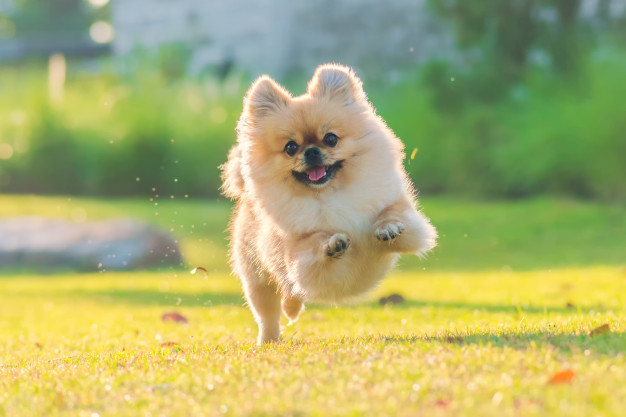
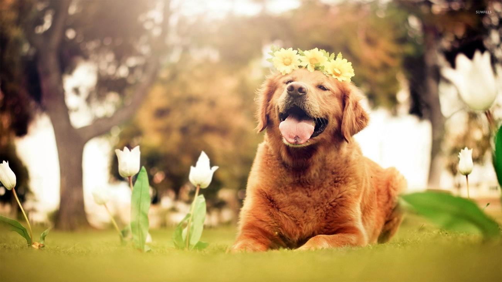
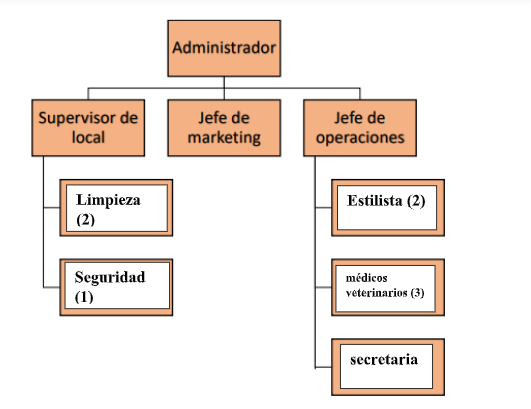
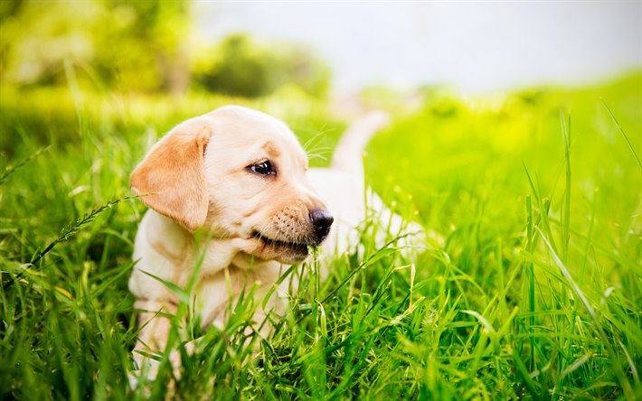

Nombre de la empresa
Veterinaria Movil
Imagen de la empresa

Descripción de la empresa
Este proyecto se hará por medio de vehículos adaptados, donde en la
parte trasera tenga todo lo necesario para proporcionar la
asistencia de estética y veterinaria. Se acude al domicilio de las
personas para atender principalmente a perros y gatos de todos los
tamaños.

La preocupación por el bienestar de los animales en nuestra sociedad
ha influido en la concientización de la tenencia responsable de las
mascotas, preocupándose por su salud e integridad física. Por tal
motivo se considera como oportunidad ingresar al mercado un servicio
innovador como es una veterinaria móvil, especialmente en esta época
de virus.
Misión
Nuestra misión es proporcionar la atención médica de la más alta
calidad a nuestros pacientes al tiempo que brindamos a nuestros
clientes educación y asistencia en todos los aspectos del cuidado y
la propiedad de los animales, incluida la conciencia de la salud
pública.
Visión
Ser en el mercado, la mejor veterinaria móvil innovadora con alta
concurrencia, reconocida por su buen servicio y sus valores en la
ciudad de La Vega para que más adelante se pueda extender por todo
el país. Manteniendo una identidad corporativa socialmente
responsable para la satisfacción de los clientes, ofreciendo y
realizando servicios veterinarios de gran calidad y alto nivel
técnico y científico.
Valores
- Calidad
- Puntualidad
- Comprensión
- Respeto
- Compasión
Breve historia
Esta idea surge como consecuencia de la detección de una oportunidad
de negocio. Nace en el 2021. Sabemos que la vega esta escasa de un
buen servicio veterinario, la preocupación por el bienestar de los
animales en nuestra sociedad fue la que impulso esta idea, pero cabe
mencionar que muchas personas en esta época de pandemia debe
mantenerse en su casa, en especial esas abuelitas que tienen gatitos
porque al salir podría ser un riesgo que se expone su salud física,
por eso la idea de crear una veterinaria móvil, donde a través de
protección necesaria, se acude al domicilio de las personas para
atender principalmente a perros y gatos de todos los tamaños.

Objetivos
Nuestro objetivo como clínica veterinaria móvil es facilitar la
atención para su mascota en la comodidad de tu hogar, obteniendo una
ventaja competitiva de nuestra empresa a través de la innovación
para llegar a todo el país, por ello, orientamos todos nuestros
esfuerzos en plasmar dicha estrategia de manera eficaz y eficiente.

Ubicación
Calle profesor Juan Bosh, No. 32, Las Marías, El Mirador, La Vega,
República Dominicana.
Descripción del producto o servicio
Consultorio veterinario que presta servicios básicos para el cuidado
de animales domésticos (consultas, medicina preventiva, peluquería)
que necesiten asistencia veterinaria a domicilio. La aportación
diferencial de este proyecto se basa en que la prestación del
servicio se hará directamente en la ubicación del paciente, bien sea
su domicilio o la granja donde esté ubicado.
Características
Los productos que ofreceremos principalmente son Análisis:
bioquímicos, urianálisis, cultivos (generalmente este servicio se
subcontrata a laboratorios externos), Consulta: con o sin cita
previa (urgencia). Medicina Preventiva: específica para distintos
tipos de animales. Suelen prestar también servicios personalizados
para mascotas en función de su rango de edad en forma de, planes
para cachorros, o planes geriátricos. Peluquería e Higiene, Etología
y soluciones del comportamiento.

Segmentación del mercado
Teniendo en cuenta que el segmento a atender son los animales, el
producto o servicio a ofrecer está construido para atender las
necesidades en particular de cada cliente, o mejor dicho; paciente.

Análisis FODA

Organigrama

Proceso de selección y capacitación de personal
Para iniciar operaciones, se ha decidido contar con personal
calificado en el rubro de servicio al cliente. El proyecto iniciará
con 2 estilistas, 1 médico veterinario en general y 1 secretaria,
uno de los estilistas se encargará de conducir el automóvil.
Luego de un largo proceso de selección, se procede al entrenamiento
de estos debido a que es necesario que los nuevos integrantes de la
empresa se adecuen al ritmo de la empresa y al manejo de algunos
procesos y sistemas. En muchos casos, esta etapa se suele dirigir
por personal de los altos puestos de la empresa. El programa de
entrenamiento del bar incluirá capacitaciones tanto para el manejo
de sistemas, calidad de servicio y constante actualización de las
tendencias de innovadores tragos artesanales.
